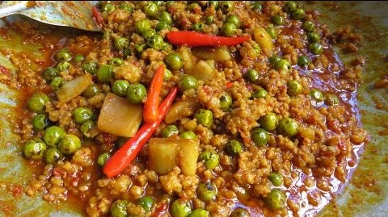

ទឺកប្រហុកគឺជាទឹកជ្រលក់ម្យ៉ាងដែលជាមុខម្ហូបសំខាន់មួយរបស់ជនជាតិខ្មែរ ហើយម្ហូបខ្មែរភាគច្រើនប្រើប្រហុកដើម្បីបន្ថែមរស់ជាតិឱ្យកាន់តែឆ្ងាញ់ពិសារ។ ទឹកប្រហុកមានរសជាតិកាន់តែឆ្ងាញ់កាលណាប្រើសម្រាប់ជ្រលក់ជាមួយបន្លែឆ្អិនឬត្រីឬសាច់ឆ្អិន។ ជាទូទៅទឹកប្រហុកគឺជាទឹកជ្រលក់ដែលគេប្រើសំរាប់ជ្រលក់ជាមួយពោះគោស្ងោរ និង សាច់អាំង។
ចំណាំ៖ ប្រហុកជាម្ហូបអាហារពិសេសមួយប្រភេទដែលប្រជាជនខ្មែរពិសារតាំងពីដូនតាមកហើយវាបានក្លាយទៅជាអាហារនៃអត្តសញ្ញាណជនជាតិខ្មែរផងដែរ។ ជនជាតិខ្មែរស្ទើរតែទាំងអស់នៅជនបទនូវតែអនុវត្តប្រពៃណីធ្វើប្រហុកស្ទើរគ្រប់ៗផ្ទះដើម្យីបរិភោគប្រចាំថ្ងៃ។ សម្រាប់អ្នកនៅទីក្រុងសម័យថ្មីមួយចំនួនមិនសូវចេះធ្វើនោះទេ ប៉ុន្តែនៅតែនិយមពិសារជាប្រចាំ។
ប្រហុកខ្ទិះបង្គាជាមួយត្រប់ខៀវគឺជាទឹកជ្រលក់យ៉ាងដែលជាមុខម្ហូបសំខាន់មួយរបស់ជនជាតិខ្មែរ។ ម្ហូបខ្មែរភាគច្រើនប្រើប្រហុកដើម្បីបន្លែមរសជាតិឲ្យកាន់តែឆ្ងាញ់។

ប្រហុកខ្ទិះបង្គាជាមួយត្រប់ខៀវគឺជាម្ហូបដែលធ្វើពីប្រហុក បង្គានិងត្រប់។ ផ្លែត្រប់ខៀវគឺជាត្រប់ម្យ៉ាងមានរាងតូចៗមានទំហំប៉ុនត្បូងខ្ចងនិងផ្លែជាកញ្ចុម មានរាងជាវ័ល្សដូចដើមទំពាំងបាយជូរ វាមានគ្រាប់ជាច្រើនហើយវាមានរសជាតិចត់តិចៗ ដែលប្រជាជនខ្មែរចូលចិត្តដាក់ក្នុងសម្ល សម្លការី និងម្ហូបផ្សេងៗ ជាពិសេដូចជា ប្រហុកខ្ទិះបង្គាជាមួយត្រប់ខៀវខ្ចីនេះឯង។ ប្រហុកខ្ទិះបង្គាពេញនិយមបំផុតសំរាប់ប្រជាជននៅតាមជនបទ គេតែងតែពិសារជាមួយបន្លែស្រស់ជាច្រើនមុខ។ ចំណាំ៖ អន្លក់ប្រហុកខ្ទិះរួមមានដូចជា ស្ពៅក្តោប ត្រសក់ សណ្តែកកួរ ពោតបារាំង ឬបន្លែផ្សេងៗទៀតតាមចំណង់ចំណូលចិត្ត។
អាម៉ុកសាច់ត្រីទឹកសាបជាអាហារពិសេសខ្ចប់ដោយស្លឹកចេក និងគ្រឿងផ្សំពិសេសដ៏ទៃទៀត ដែលគ្រាន់តែមើលក៏ស្រក់ទឹកមាត់ដែរ។ អាម៉ុកត្រី គឺជាប្រភេទអាហារបែបប្រពៃណីដែលគេនិយមចូលចិត្ដធ្វើបរិភោគក្នុងរដូវកាលបុណ្យអុំទូក ប៉ុន្ដែសម្រាប់អ្នកដំណើរដើរកំសាន្ដអាចសាកល្បងរកទិញញ៉ាំមុខម្ហូបនេះគ្រប់ពេលនៅតាមភោជនីយដ្ឋាននៅក្រុងសៀមរាប។

សម្លម្ជូរសាច់មាន់ជាមួយមើមឈូក គឺជាអាហារដែលប្រជាជនតាមជនបទនិយមចម្អិននិងបរិភោគប្រចាំថ្ងៃ។ វាជាមុខម្ហូបដែលសាមញ្ញងាយស្រួលក្នុងការចម្អិននិងមានរសជាតិឆ្ងាញ់ពិសារ។ ក្នុងព្រះពុទ្ធសាសនា ផ្កាឈូកគឺតំណាងឱ្យភាពបរិសុទ្ធ ហេតុនេះហើយទើបប្រជាជនខ្មែរជាអ្នកគោរពព្រះពុទ្ធសាសនាតែងតែយកផ្កាឈូកទៅថ្វាយព្រះ។ ដើមឈូកដុះចេញពីដីល្បាប់ហើយស្លឹកនិងផ្ការបស់វាស្អាតគួរឱ្យទាក់ទាញណាស់ ចំណែកឯមើមឈូក ក្រអៅឈូក គ្រាប់ឈូកផ្តល់សារប្រយោជន៏ជាច្រើនយ៉ាងដល់សុខភាព។ គេអាចយកមើមឈូក គ្រាប់ឈូក និងក្រអៅឈូកទៅចម្អិនជាម្ហូបអាហារឬក៏ទៅផ្សំជាឱសថក៏បាន ចំណែកឯស្លឹកឈូកគេអាចប្រើវាសម្រាប់ខ្ចប់ត្រី សាច់និងរបស់ផ្សេងៗទៀត រីឯគ្រាប់ឈូកស្រស់វិញគេពិសារជាបង្អែមក៏បាន។
ចំណាំ៖ ជាទូទៅគេបរិភោគសម្លមួយប្រភេទនេះជាមួយបាយក្តៅៗដើម្បីបង្កើនឱជារសមួយកម្រិតទៀត។
© បង្កើត និង តែងដោយ
រចនាបទ & អភិវឌ្ឍដោយ ដើរលេងសៀមរាប